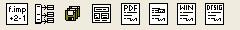
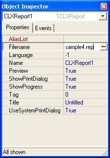

This is a brief guide about using Report Manager components in Delphi/Kylix/Builder.
You must install all the components before continuing, see Installation section to do so.
When you install the packages you see this component palette components:

| Component | Description | D6/B6 | K2 | D5/B4 |
| TRpEvaluator | To process expresions at runtime, you can assign a TRpAlias component to access database fields, dont' worry about it but can be useful for you in some cases | Yes | Yes | Yes |
| TRpAlias | Can be linked to a TRpEvaluator, and to a TXXXReport. Allow to pass application opened datasets to loaded report of those components (the alias of the dataset must be the same as the alias defines in the report design) | Yes | Yes | Yes |
| TRpLastUsedStrings | This component remembers a list of strings, ordering by use, useful component for storing information about last used files etc... | Yes | Yes | Yes |
| TRpExpreDialog | A help dialog to construct TRpEvaluator expressions | Yes | Yes | No |
| TRpPDFReport | Report exporting to Adobe PDF Format | Yes | Yes | Yes |
| TCLXDriver | Report preview and printing for cross platform CLX applications | Yes | Yes | No |
| TVCLReport | Report preview and printing using Windows GDI (Windows only) | Yes | No | Yes |
| TRpDesigner | Component to call Report Manger Designer Interface allow to embed the report designer in your application | Yes | Yes | No |
TRpCLXDriver is the most common component, allow to preview/print reports using cross platform CLX library in Delphi 6/C++Builder 6 and Kylix 2.
Published properties

| Property Name | Description |
| AliasList | Allow not pass opened dataset to the report using a TRpAliasReport |
| Filename | The filename to load with a relative or absolute path. If you use absolute paths or subdiretories and want to develop cross plaform you must assign a correct plaform pats '\' directory separator in Windows and '/' in Linux |
| Preview | If true, the execute method will show preview else will print the report |
| ShowPrintDialog | When preview is false and execute method is called a dialog will show to the user asking page interval to print, copies etc |
| ShowProgress | For impatient users, a dialog shows the progress and the report in progress can be canceled |
| Tittle | Print document tittle that shows print queue |
| UseSystemPrintDialog | If true, the system print dialog is show, else a custom reeport manager engine dialog is show |
Public properties
| Property Name | Description |
| Report | Allow accessing sections, subreports, database and dataset information once a report is loaded. See TRpReport component reference for a description |
Public Methods
| Method Name | Description |
| Execute | Boolean function, executes the report, preview or print based on properties Preview, Filename... |
| PrinterSetup | Executes printer setup dialog, does the same as Printer.ExecuteSetup |
| CheckLoaded | Check if report is loaded and if not will try to load it, if it can load the report will raise an exception, when you access Report property it's called automatically so don't worry about this method |
| ShowParams | Loads the report if not loaded and shows a dialog to the user with the report parameters, so the user can alter them, usually you perform a execute after show the parameters |
| ShowProgress | For impatient users, a dialog shows the progress and the report in progress can be canceled |
| PrintRange | Function to print ranges of pages with copies and collate options |
General procedure to preview/print a report in your application
TPDFReport and TVCLReport share most properties and methods.